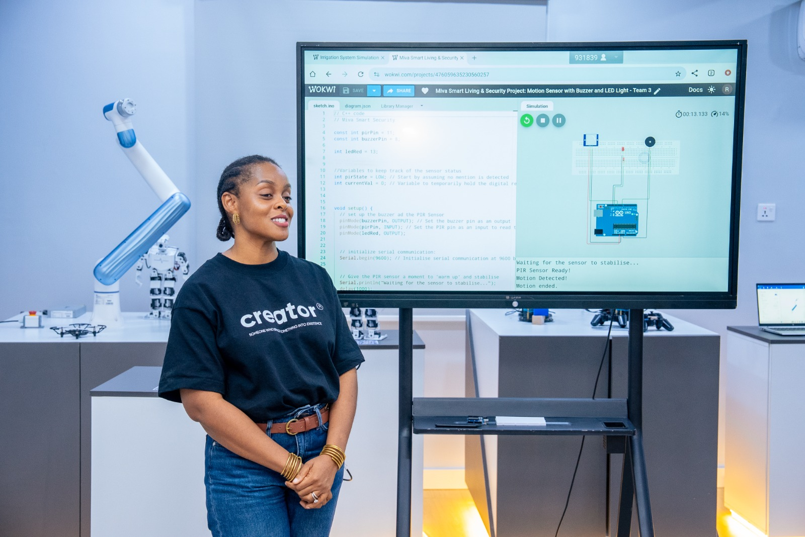
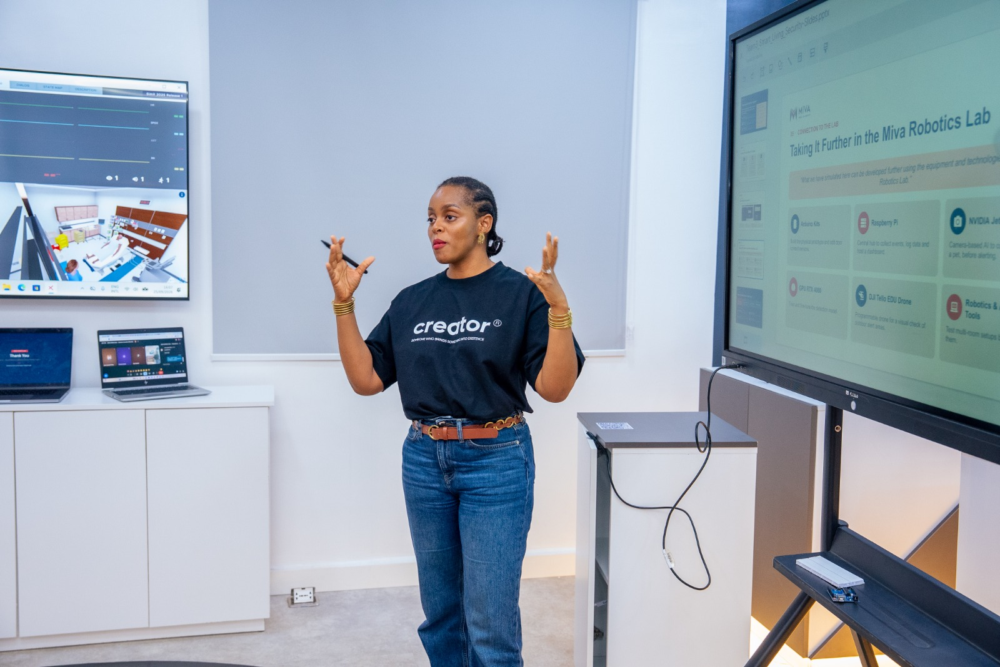

About Isioma Tàlàbí
I am Isioma, a cybersecurity student at Miva Open University with more than ten years of experience in global development. I also currently work with Save the Children International, where I manage the Global Resource Centre, a knowledge management platform used across the organisation. Previously, I have held positions with PricewaterhouseCoopers and the Office of the Vice-President of Nigeria. I am also a Commonwealth Scholar with First Class Honours and published research. Across these roles my work has been about making information and systems usable for the people who depend on them. In 2026 I began a BSc in Cybersecurity to turn that interest in systems towards how they are attacked and defended.
My technical foundation starts with Linux and networking. I run a Kali Linux lab for TryHackMe exercises and I am currently working through OverTheWire Bandit, and following HackTheBox Academy’s Linux Fundamentals module. Alongside this I am studying networking from the ground up, from the OSI model and subnetting to TCP/IP behaviour, and practising network design in Cisco Packet Tracer. My degree adds programming and problem-solving through C++, Python and data structures. I am working towards Security+, eJPT, PNPT and eventually OSCP, with penetration testing as my core direction.
In 2026 I joined the MIVA Robotics Lab as a Fellow, which moved my learning from software into hardware. I lead the IoT & Embedded Electronics chapter of the MIVA Robotics Club and work with Arduino and ESP32 on a team building a low-cost smart monitoring and security system that takes sensor input, makes decisions and triggers alerts. Working with circuits and microcontrollers has shown me how much modern infrastructure depends on small, connected devices, and how rarely those devices are designed with security in mind.
These threads point towards where I want to specialise: operational technology and industrial control systems, including SCADA. Power, water and health systems run on the same combination of Linux, networks and embedded controllers I am learning now that they are the systems that communities, including those I served in development work, rely on most. My next steps are strengthening my electronics fundamentals, learning industrial protocols and the Purdue Model, and building a home ICS lab with OpenPLC. I document the process, including the wrong turns, on GitHub and on my Medium blog, Sudo Make Me a Hacker.

